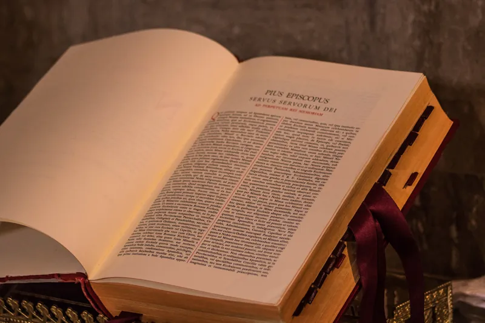

En septiembre de 1903, Su Ilustrísima, el Cardenal de Venecia José Sarto subía a la Sede de Pedro. En octubre, luego de breves alocuciones, escribe su primera Encíclica: “E Supremi Apostulatus”, donde declara que su divisa y programa de su pontificado será de OMNIA INSTAURARE IN CHRISTO.
El Papa santo tenía una inmensa experiencia pastoral, y había sufrido terriblemente por la decadencia de la vida litúrgica. De allí que para instaurar, o restaurar todas las cosas en Cristo, sabiendo que una corriente de renovación litúrgica se estaba desarrollando, impulsada sobre todo por el célebre abad de Solesmes, Dom Guéranger, está decidido a comprometer su autoridad para que rinda frutos. Es por eso que en dos meses solamente, el 22 de noviembre del mismo año, escribe su célebre Motu Proprio “Tra le Sollecitudini”, por el cual restaura el canto litúrgico.
En 1921, otro famoso Abad benedictino, Dom Gaspar Lefebvre, decía al respecto: “Pío X, en una época de decadencia litúrgica, dio un grito de alarma en su primer Motu Proprio. En una afirmación que podría considerarse osada si no proviniera de boca de un Papa, declaró que “LA PARTICIPACIÓN ACTIVA A LOS MISTERIOS SACROSANTOS Y A LA ORACIÓN PÚBLICA DE LA IGLESIA ES LA FUENTE PRIMERA E INDISPENSABLE DEL VERDADERO ESPÍRITU CRISTIANO”. Deseoso de INSTAURAR TODAS LAS COSAS EN CRISTO y su Iglesia, Pío X quiso devolver a los cristianos reunidos para el culto aquel espíritu de cuerpo, aquel sentido social y jerárquico que se había perdido. Con esta finalidad les prescribió cantar las fórmulas litúrgicas en las misas solemnes. Su Santidad declaró que eso era sólo un comienzo. Este impulso no debía detenerse. La participación activa a la misa cantada se hace por el canto: la participación activa a la misa rezada se hará por la recitación de los textos litúrgicos. Era la lógica de las cosas”.
Notemos que San Pío X no es un veleidoso, pues en su afán de llevar las almas a esta fuente pura de la piedad cristiana no procede como artista, ni como teórico, arqueólogo… sino como Pastor Supremo de la grey. Y así, orienta su programa “restaurador” de una manera enérgica y eficaz hacia el altar, el sagrario, el oficio divino, el Año Litúrgico. Es decir, promueve positivamente la “participación activa” a los sacrosantos misterios de la oración pública de la Iglesia:
-Decreta normas precisas sobre la música sagrada y el arte cristiano. Restaura el canto gregoriano.
-Invita a las almas a la comunión diaria o frecuente. “Abre el copón” a las almas inocentes de los niños promoviendo la comunión desde la primera edad.
-Respecto a su famoso Catecismo, en una carta del 14 de Junio de 1905 al Cardenal Respighi, pide que sea completado con una introducción sobre el año y las fiestas litúrgicas.
-Restaura y reforma el Breviario por la Bula “Divinu Afflatu” del 1 de noviembre de 1911, de manera que “este edificio que con esmero inteligente levantó la Mística Esposa de Cristo aparezca de nuevo espléndido por su dignidad y armonía”.
Volviendo, pues, a la participación activa de que habla San Pío X, debemos recordar que todo en la Liturgia, especialmente en la Santa Misa, obedece a un RITO fijado por la Iglesia y su Tradición, cuyas reglas no son arbitrarias. En liturgia, el mínimo gesto tiene su sentido y una razón de ser: comprender el valor significativo de los movimientos, gestos, actitudes, colores, oraciones, melodías y cantos de nuestras ceremonias ayudará poderosamente a que nuestra participación sea realmente fructuosa. Porque, como decía Dom Guéranger, “LA LITURGIA ES LA TRADICIÓN MISMA, EN SU MÁS ALTO GRADO DE PODER Y SOLEMNIDAD. EL FONDO MISMO DE LA LITURGIA CATÓLICA ESTÁ CONSTITUÍDO POR LA ALIANZA DE LA POESÍA Y LA FE”.
Considerada en general, la liturgia es el conjunto de símbolos, cantos y actos por los que la Iglesia expresa y manifiesta su religión hacia Dios. Por lo tanto, la liturgia no es simplemente la oración, sino más bien la oración considerada como acto social y oficial: el culto público de la Iglesia. Por eso una oración individual, hecha en nombre de un individuo, valiosa y buena sin duda, no es oración litúrgica. Menos aún, ella no es la reunión de las oraciones individuales de los fieles mientras en el altar se desarrollan los sagrados misterios. La liturgia es la oración común de toda la Iglesia, reunida para hacer escuchar a Cristo la única voz de su Esposa, y unirse a la voz de Cristo que intercede por ella ante nuestro Padre.
Ahora bien, dado que la Iglesia no es una sociedad de espíritus, sino de hombres, creaturas compuestas de alma y cuerpo, que traducen toda verdad bajo imágenes y signos, este celestial conjunto de confesión de la fe, oración y de alabanza, hablado y cantado en un lenguaje sagrado, modulado sobre un ritmo sobrenatural, se produce también por signos exteriores, ritos y ceremonias que son como el cuerpo de la liturgia. Así pues, para unirnos a esta liturgia que es como “el alma de la Iglesia en estado de oración”, nuestra oración individual es insuficiente, y si no pasamos por su cuerpo no podemos unir nuestras almas a su alma. En este culto público de la Iglesia pasamos de lo visible a lo invisible, de la belleza visible a la belleza perfecta.
Esta participación, muy a menudo combatida o rechazada porque es mal comprendida, no es una innovación modernista ni una idea desviada del “movimiento litúrgico” del siglo XX, sino una de las formas más tradicionales de la plegaria litúrgica, caída en desuso en el curso de los últimos siglos. Como vimos, Dom Guéranger y San Pío X tienen el honor de haber despertado la piedad litúrgica del pueblo cristiano, a menudo aislado del sacerdote en el altar, en provecho de un recogimiento personal que de hecho lo privaba de la riqueza de gracias encerradas por el Espíritu Santo en la plegaria pública de la Iglesia. Es innegable que los modernistas han utilizado el movimiento de retorno a la liturgia para introducir progresiva y lentamente reformas que nos han conducido a la revolución postconciliar; pero ello no nos autoriza a negar y rechazar todo. De ninguna manera está inscrito en la lógica de las cosas que la participación activa a la liturgia debía conducirnos al NOVUS ORDO MISAE. Esa sería una simplificación demasiado apresurada, pues entre esas dos realidades hay una diferencia substancial.
Sin embargo, precisamos que la Iglesia no ha querido nunca imponer categóricamente que la participación activa se haga exclusivamente por las respuestas en alta voz, el canto o las actitudes corporales. Nuestro querido Pío XII lo dice sabiamente: “El temperamento, el carácter y el espíritu de los hombres son tan variados y tan diferentes que todos no pueden ser dirigidos y conducidos de la misma manera por oraciones, cánticos y actos comunes. Además, las necesidades de las almas y sus gustos no son los mismos en todos, y no permanecen siempre idénticos en cada uno” (Encíclica Mediator Dei).
Lo fundamental en toda la liturgia es unirse a las intenciones de Jesucristo y del celebrante y así “beber el verdadero espíritu cristiano como en su fuente primera”. De allí la clara recomendación de la Iglesia: que todos los que sean capaces se unan a su oración participando activamente de su Liturgia, que es el medio preferido y más apto para realizar aquella unión santificadora.
Sigamos pues fielmente la recomendación de San Pío X: “NO SE TRATA DE RECITAR ORACIONES DURANTE LA MISA, SINO DE HACER DE LA MISA NUESTRA ORACIÓN”.
+Padre Luis María Canale.